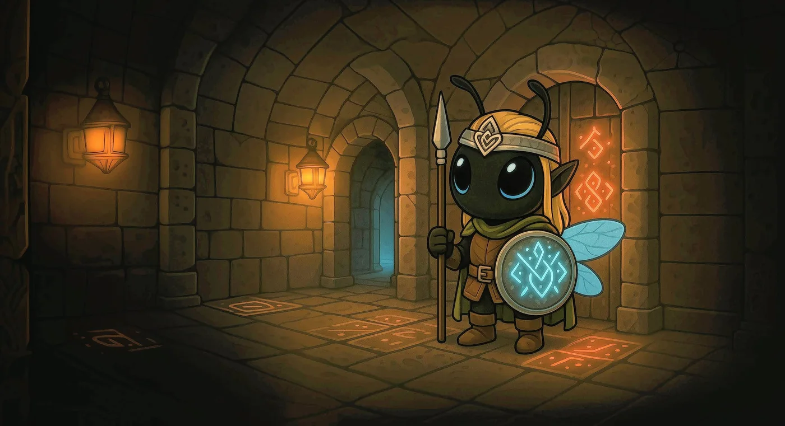
Cloud Native Bern · May 5, 2025
There and back again.
Scene-by-scene illustrations trace a packet through Kubernetes networking, paired with a live demo of the Foundations Networking lab.
Conference program ↗Selected workExperiences · stories · artifacts
I turn technical ideas into worlds people can explore, stories they can follow, and images they can carry with them.
Take a look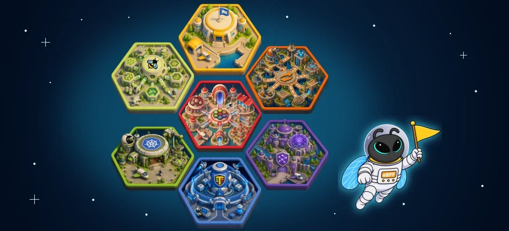
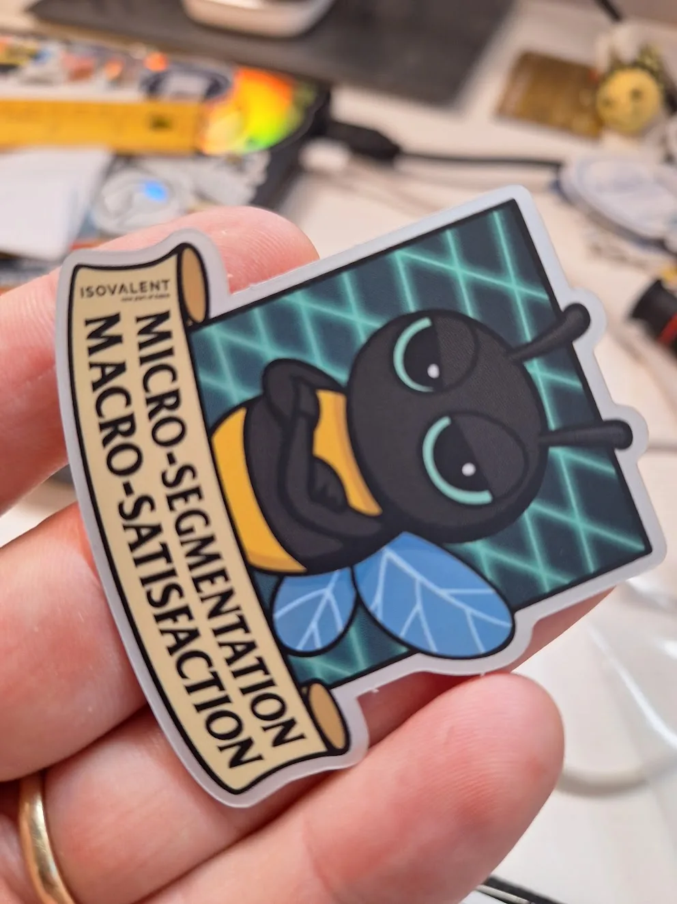
01 Interactive experience
The lab map grew into a living learning world: explore by topic, follow a journey, launch a real environment, and see progress take shape.
Map → seasonal campaign → Universe
Seven topic worlds give learners a way in. Journeys connect labs with books, videos, and events; quests and seasonal experiences give people a reason to return.
A visual history of the experience, from illustrated learning map to seasonal campaign and the live Universe.
02 Technical storytelling
Cloud-native ideas become serial adventures. Open a cover to read each comic page by page, from the first encounter to the final episode.
Behind the panels These comics are made with Panelgen ↗, an open-source tool for generating consistent illustrated series. Read how it came together ↗
More than a comic. Each story is a teaching tool: familiar characters, a clear technical problem, and a path to hands-on labs.
03 Visual identity · in the wild
An illustrated visual language that moved from digital designs to laptop covers, conference badges, and hands-on learning rewards.
✳Sticker designs made for the people learning, building, and sharing cloud-native tech.
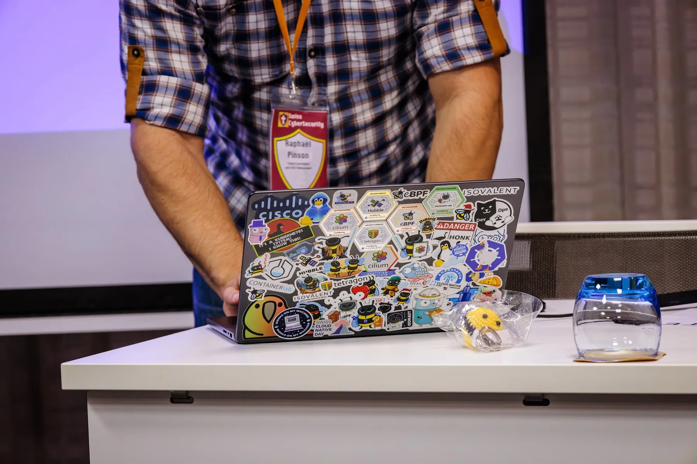
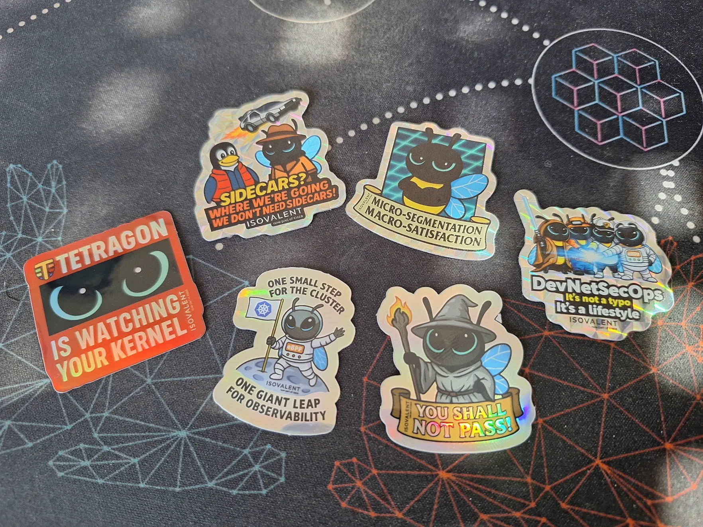
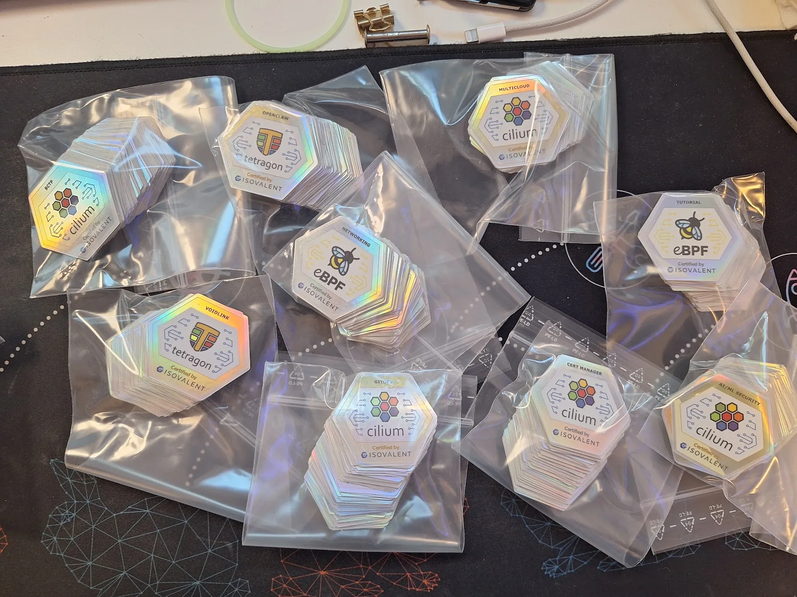
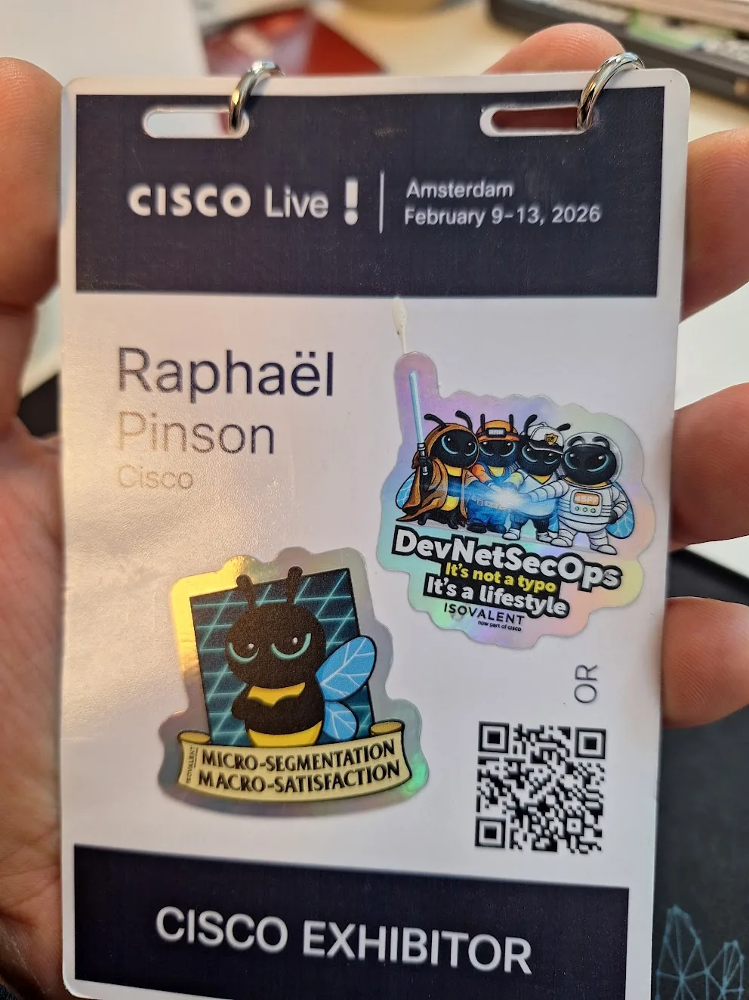
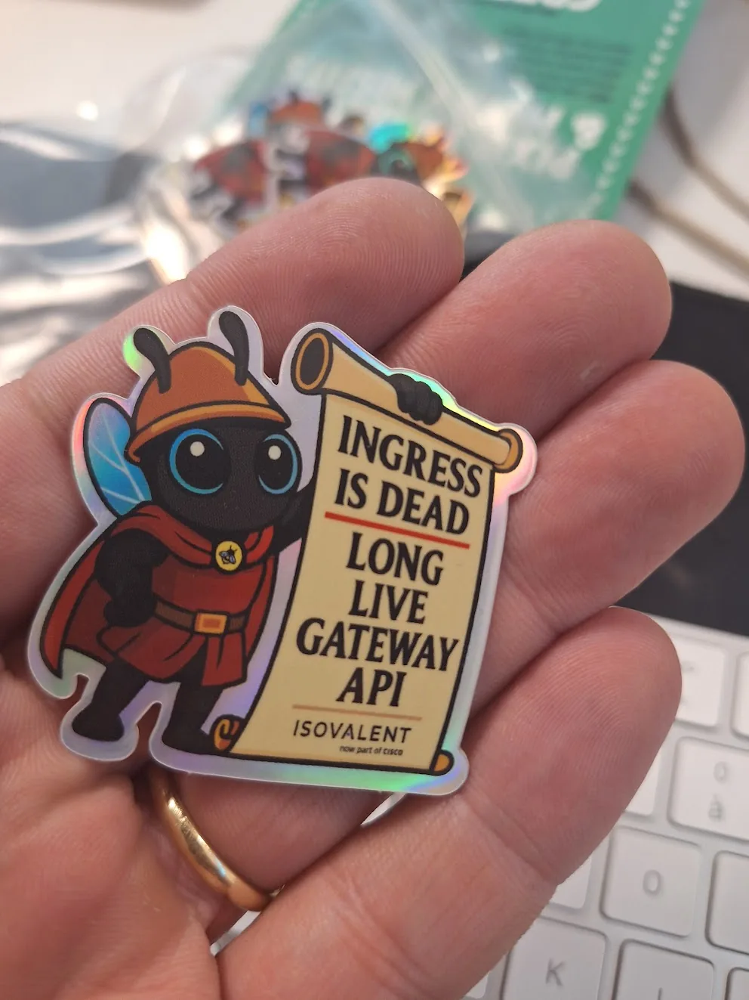
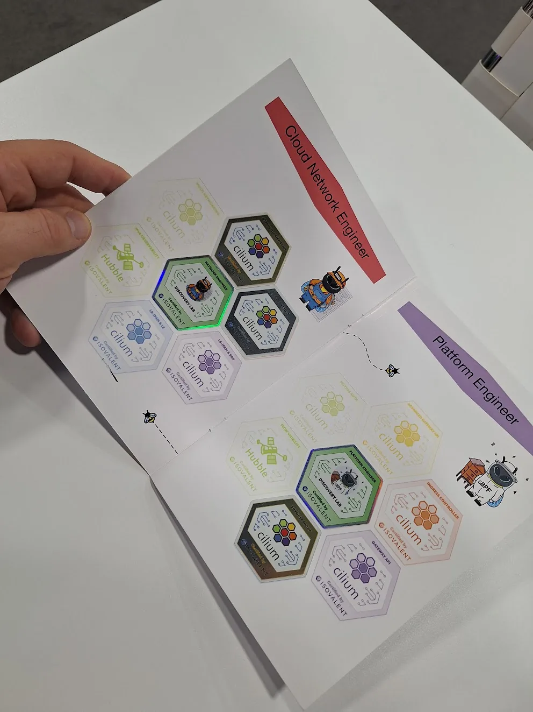
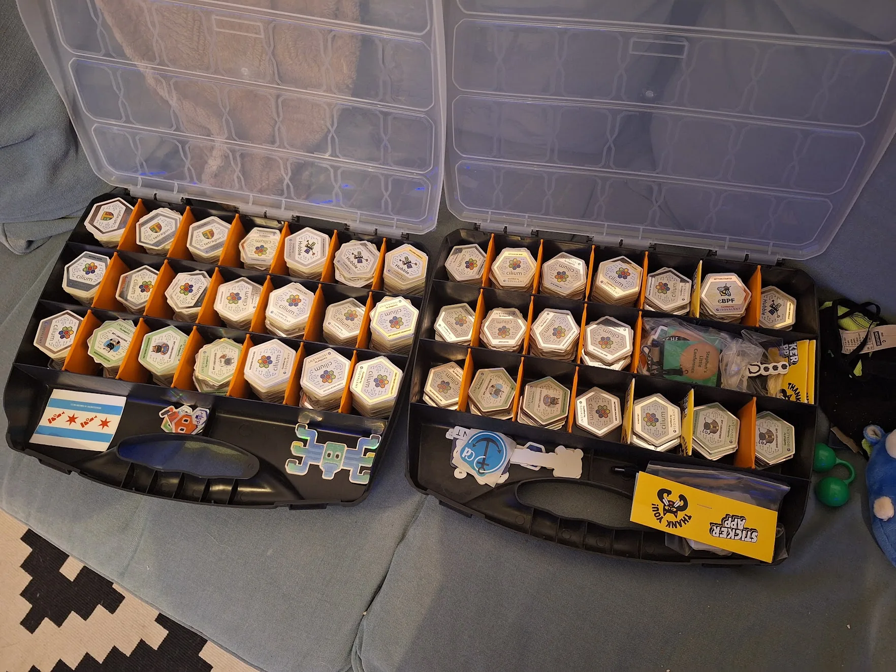
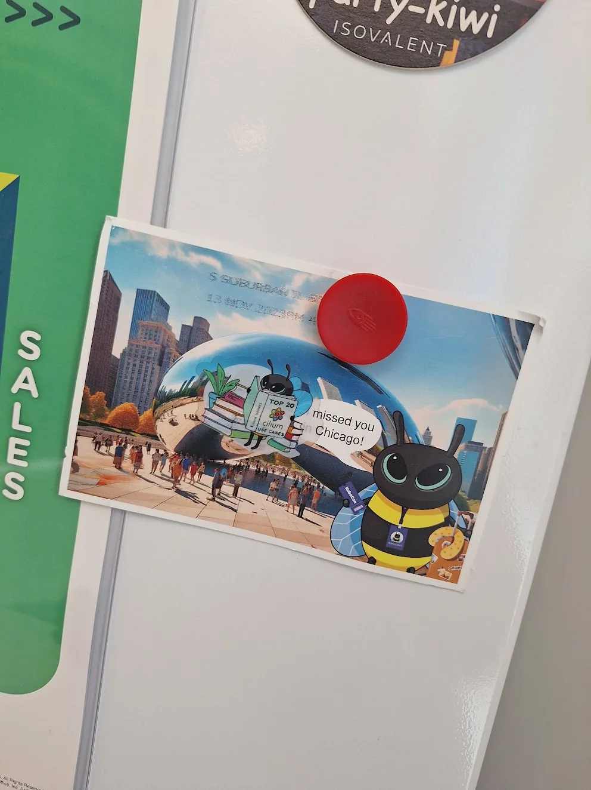
04 Visual explainers
Editorial illustration can make kernel behavior, packet paths, and security models feel concrete before the reader opens a terminal.

Scene-by-scene illustrations trace a packet through Kubernetes networking, paired with a live demo of the Foundations Networking lab.
Conference program ↗05 Independent editorial work
Nine illustrated explainers and two companion comic strips explore autistic perception, social processing, attention, sensory experience, and how people interpret one another. Open any story to read it page by page.
Read the series ↗Behind the panels The comics and explainers are made with Panelgen ↗. Read about the project ↗